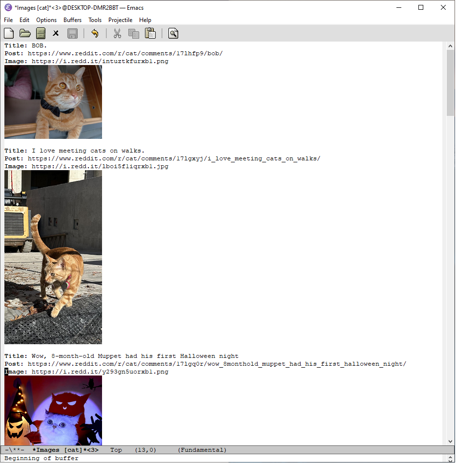

Смотрим картинки с Reddit в Emacs
Дело было вечером, Делать было нечего…
— Сергей Михалков
Думаю не секрет, что я являюсь пользователем операционной системы текстового редактора Emacs. Но при этом, я никогда не писал что-то свое с использованием Emacs Lisp, максимум, что делал, так это вносил различные изменения в свой .emacs.d для конфигурирования самого редактора.
Так как я уже использую Emacs для чтения RSS и Gemini, почему бы еще не просматривать свежие картинки с Reddit через него, подумал я.
Знакомимся с материалами по языку и в "бой":
- https://www.gnu.org/software/emacs/manual/html_node/eintr/
- https://emacsdocs.org/docs/elisp/Emacs-Lisp
Первым делом нам надо подключить пакеты json и url, для того, чтобы можно было получать данные с URL и парсить JSON формат.
(require 'json) (require 'url)
Далее весь код умещается в пять функций, рассмотрим каждую из них.
Функция my/insert-image-from-url предназначена для того чтобы получить изображение с URL адреса, и вставить его в текущий буфер.
(defun my/insert-image-from-url (url) "Insert image from URL." (let ((buffer (url-retrieve-synchronously url))) (unwind-protect (let ((data (with-current-buffer buffer (goto-char (point-min)) (search-forward "\n\n") (buffer-substring (point) (point-max))))) (insert-image (create-image data nil t :width 200))) (kill-buffer buffer))))
В коде функции unwind-protect используется для гарантированного выполнения некоторых действий, даже если возникает ошибка или исключение. В данном случае, если возникает ошибка при получении данных изображения с URL unwind-protect гарантирует, что буфер, в котором происходит манипуляция изображением, будет убит с помощью kill-buffer. Таким образом, unwind-protect позволяет избежать утечек памяти и других проблем, которые могут возникнуть при непредвиденных ситуациях.
Функция my/get-response-from-url предназначена для получения данных с URL и возврата их ввиде строки. Используется, чтобы получить данные от Reddit API.
(defun my/get-response-from-url (url) "Get data from URL." (let ((buffer (url-retrieve-synchronously url))) (with-current-buffer buffer (unwind-protect (progn (goto-char (point-min)) (re-search-forward "^$") (buffer-substring-no-properties (point) (point-max))) (kill-buffer buffer)))))
Функция my/normal-image-url-p предназначена для проверки, является ли URL допустимым для использования в качестве изображения.
(defun my/normal-image-url-p (url) "Check image URL." (and (not (string-match-p "redgifs" url)) (or (string-suffix-p ".png" url) (string-suffix-p ".gif" url) (string-suffix-p ".jpg" url) (string-suffix-p ".jpeg" url))))
Функция my/get-new-images-from-subreddit предназначена для получения списка новых постов с изображениями с указанного subreddit. Результирующий список будет содержать информацию о каждом изображении, включая заголовок поста, ссылку на изображения и ссылку на сам пост.
(defun my/get-new-images-from-subreddit (sub) "Get list of SUB new images." (let* ((reddit-url "https://www.reddit.com") (url (concat reddit-url "/r/" sub "/new.json")) (json-str (my/get-response-from-url url)) (json-object (json-read-from-string json-str))) (remq nil (mapcar (lambda (child) (let* ((data (cdr (assoc 'data child))) (image-url (cdr (assoc 'url_overridden_by_dest data)))) (when (my/normal-image-url-p image-url) `((title . ,(cdr (assoc 'title data))) (image . ,image-url) (post . ,(concat reddit-url (cdr (assoc 'permalink data)))))))) (cdr (assoc 'children (cdr (assoc 'data json-object))))))))
И последняя функция my/show-reddit-images предназначена для открытия нового буфера с интересующими нас картинками. Она является интерактивной, что позволяет нам вызвать ее с помощью M-x и передать интересующий нас subreddit.
(defun my/show-reddit-images (sub) "Show new image from SUB." (interactive "sEnter subreddit: ") (let ((buffer (generate-new-buffer (format "*Images [%s]*" sub)))) (with-current-buffer buffer (erase-buffer) (dolist (item (my/get-new-images-from-subreddit sub)) (dolist (key '(title post image)) (insert (concat (propertize (capitalize (symbol-name key)) 'face 'bold) ": " (cdr (assoc key item)) "\n"))) (my/insert-image-from-url (cdr (assoc 'image item))) (insert "\n\n"))) (switch-to-buffer buffer)))
Итоговый результат работы всего этого в совокупности выглядит так:
